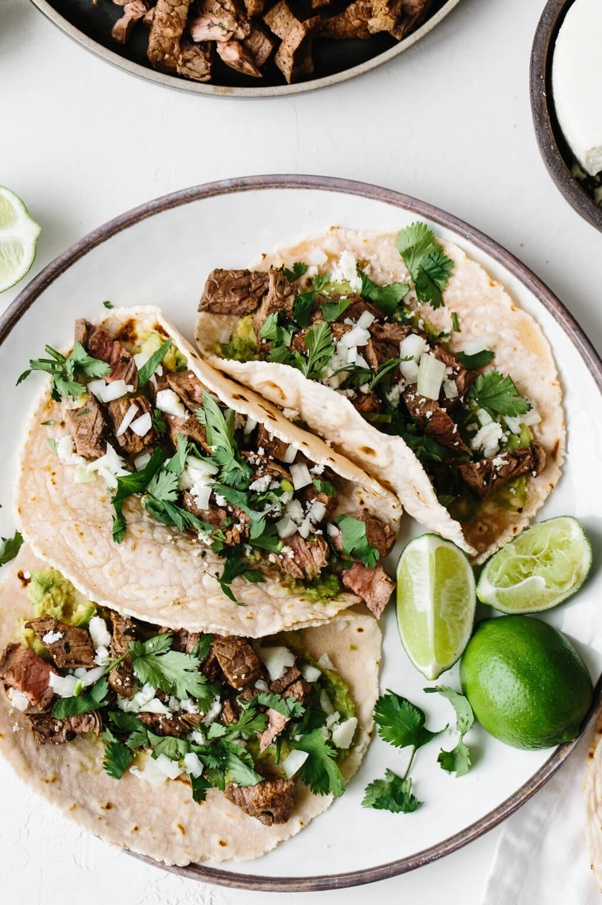

Carne Asada Tacos

Description
Carne Asada Tacos are a traditional style of tacos common in Mexican cuisine. They can often be found in the Southern United States and sometimes at taco trucks
Ingredients
- 4 flour or 6 corn tortillas
<1i>1 pound of boneless beef top sirloin, cut in bit sized pieces
- 1/3 onion peeled and chopped
- 1 bunch of fresh cilantro chopped
- 2 limes
- 1/2 cup of fresh salsa
- 4 tablespoons canola oil
Steps
- Place sliced meat into a shallow bowl, and season with salt, black pepper. Squeeze the lime juice over the meat, and turn until evenly coated. Cover, and refrigerate for 30 minutes.
- Heat tablespoon oil in a large skillet over high heat. Stir in 1/3 of the beef, and saute for 1 minute. Transfer to serving dish. Repeat with remaining beef. Meanwhile, heat tortillas on the stove/li>
- To serve, add desired amount of meat to a tortilla, spoon over some salsa. Top with onions and cilantro. Garnish with a wedge of lime to be squeezed over taco before eating.